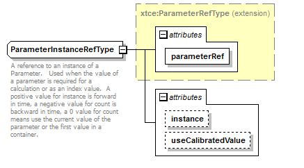

| diagram |  | ||||||||||||||||||||||||
| namespace | http://www.omg.org/space/xtce | ||||||||||||||||||||||||
| type | extension of xtce:ParameterRefType | ||||||||||||||||||||||||
| properties |
|
||||||||||||||||||||||||
| used by | |||||||||||||||||||||||||
| attributes |
|
||||||||||||||||||||||||
| annotation |
|
||||||||||||||||||||||||
| source | <complexType name="ParameterInstanceRefType"> <annotation> <documentation xml:lang="en">A reference to an instance of a Parameter. Used when the value of a parameter is required for a calculation or as an index value. A positive value for instance is forward in time, a negative value for count is backward in time, a 0 value for count means use the current value of the parameter or the first value in a container.</documentation> </annotation> <complexContent> <extension base="xtce:ParameterRefType"> <attribute name="instance" type="integer" default="0"/> <attribute name="useCalibratedValue" type="boolean" default="true"/> </extension> </complexContent> </complexType> |
| type | integer | ||
| properties |
|
||
| source | <attribute name="instance" type="integer" default="0"/> |
| type | boolean | ||
| properties |
|
||
| source | <attribute name="useCalibratedValue" type="boolean" default="true"/> |